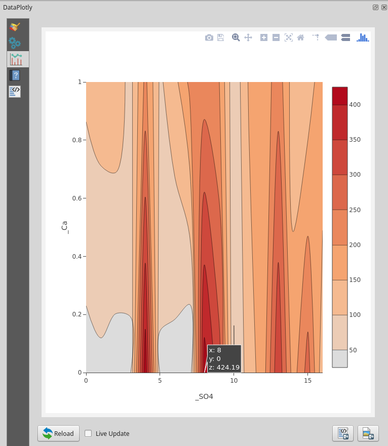
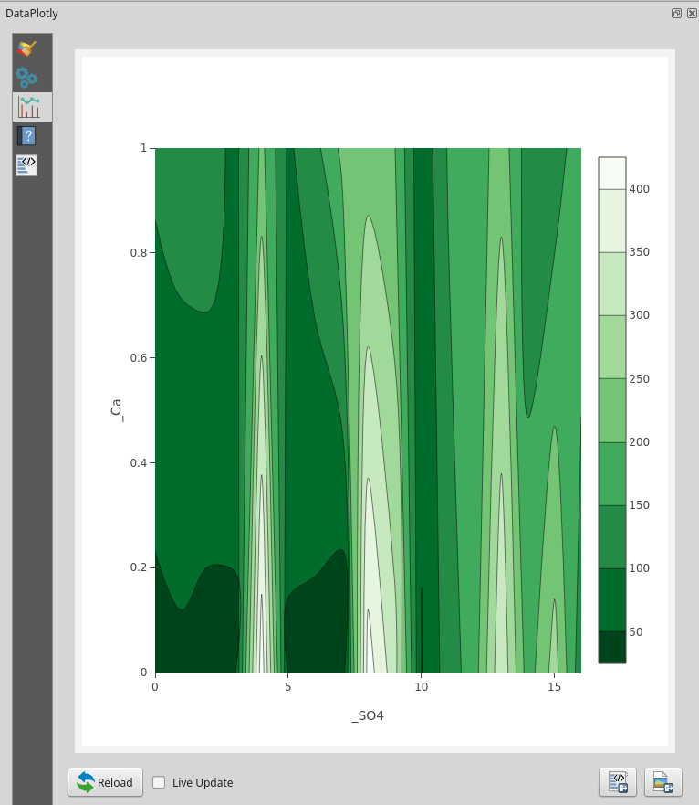
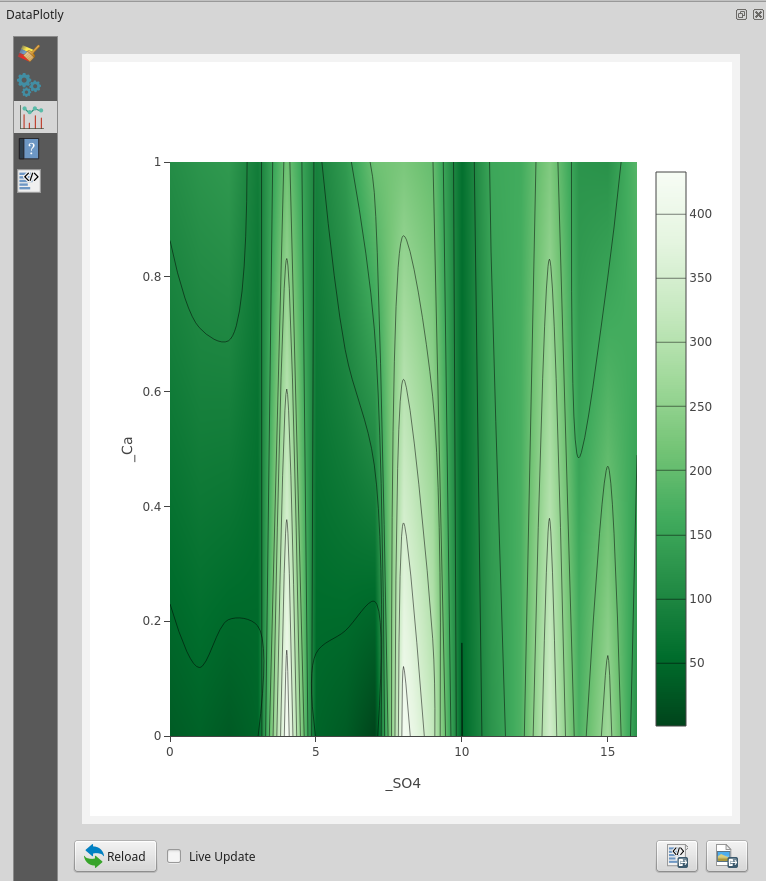
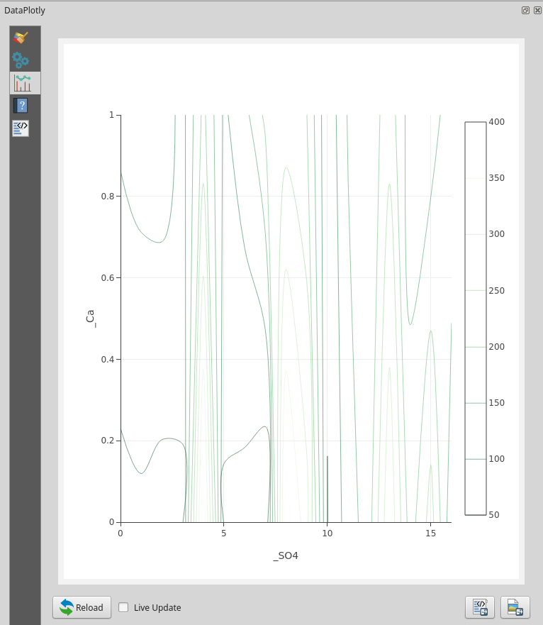

Grafico a contorno
Qui trovi la guida di tutti i parametri del grafico a contorno. Se hai bisogno di informazioni più generali consulta Utilizzo basico di DataPlotly.


Proprietà del grafico
Layer: il menu a tendina mostra tutti i vettori caricati in QGIS
Campo X: il campo X
Campo Y: il campo Y
Tipo di contorno: scegli il tipo di contorno:
Riempimento: il grafico è riempito ovunque:
Mappa di concentrazione: viene creato un grafico stile mappa di concentrazione:
Solo linee: vengono mostrate solamente le linee:


Mostra linee: togli la spunta se non vuoi che vengano mostrate anche le linee
Scala di colori: scegli fra diverse scale di colori disponibili
Personalizzazioni grafico
Mostra legenda: mostra la legenda del grafico
Titolo grafico: titolo del grafico
Titolo legenda: il titolo della legenda